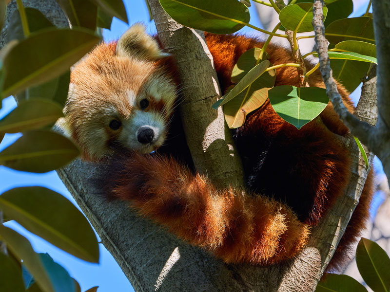

El panda rojo (Ailurus fulgens) no es tan conocido como el panda gigante, blanco y negro, pero sí mucho más bonito. Su tamaño, como el de un gato doméstico, su color rojizo y su espesa cola anillada son la causa de ello. La especie vive en la región central de China, al norte de Birmania y en las montañas nepalíes. La mayoría de las veces, el panda rojo está subido a un árbol, sobre todo, durante el día. Cuando más activo está es al amanecer y al atardecer, que es cuando sale a comer.
La deforestación ha provocado que este precioso animal se encuentre en peligro de extinción. Su hábitat natural está desapareciendo a causa de la agricultura y la tala indiscriminada de árboles.
Miden de 30 a 60 cm. Los machos pesan de 4,5 a 6,2 kg, las hembras de 3 a 4,5 kg. Tienen el pelaje de color marrón rojizo, largo y suave en la parte superior, que se vuelve oscuro en la parte inferior. En el rostro tiene manchas de color blanco similares a las de un mapache, pero cada individuo tiene diferentes marcas faciales. Su cabeza es redondeada con orejas rectas de mediano tamaño, nariz negra, y los ojos muy oscuros, casi negros. Su cola, larga y felpuda con seis anillos de color ocre o rojo, le proporciona un equilibrio y una excelente habilidad sobre los resbaladizos musgos y líquenes que cubren los árboles. Las patas son cortas y de color negro. También tiene garras retráctiles y, como el panda gigante, un "falso pulgar", que es en realidad una extensión de los huesos de la muñeca. Posee un pelaje grueso en la planta de los pies que ofrecen protección contra el frío y oculta los genitales.
El panda rojo se divide en dos subespecies: el panda rojo occidental (Ailurus fulgens fulgens), que vive en la parte occidental y los mayores pandas rojos styans (Ailurus fulgens styani) que viven en la parte oriental. El panda rojo occidental tiene un pelaje claro en la cara, mientras que los pandas rojos styans tienen algunas marcas de facción más marcadas. La magnitud efectiva de la población de Sichuan es mayor y más estable que la población de las provincias de Yunnan, lo que implica una expansión al sur de Sichuan a Yunnan.
El panda rojo es nativo de las regiones montañosas del Himalaya, Bután, el sur de China, la India, Nepal, Birmania, aunque hay indicios de registro fósil que comprueban su antigua existencia en América del Norte.[cita requerida] Vive generalmente en los bosques templados húmedos de zonas altas y con abundante bambú. Su pelaje es de color pardo rojizo con la cola larga y peluda. Sus extremidades delanteras son bastante cortas, por lo que tiene una peculiar forma de caminar. Es un animal de carácter solitario, territorial y de costumbres nocturnas. Son omnívoros, aunque se alimentan principalmente de bambú. A pesar de su nombre común, no está emparentado cercanamente con el oso panda.
Los pandas rojos son nativos del Sureste de Asia; Himalaya, el sur del Tíbet, Bután, el noreste de India, de la provincia de Yunnan y las montañas Hengduan de la provincia de Sichuan en China. Se cree que la última zona ha sido un refugio de pandas rojos, así como muchos otros animales, en el último período (Pleistoceno), durante la época glacial. La garganta del río Brahmaputra, como hace un bucle en todo el extremo oriental de la cordillera del Himalaya, se considera una división natural entre las dos subespecies.
Los pandas rojos viven en climas de temperatura moderada (10-25 °C), con pocos cambios anuales en las zonas boscosas; prefieren las zonas montañosas de 1800-4800 m s. n. m., especialmente los bosques templados de coníferas con viejos árboles de rododendro y, por supuesto, bambú. Comparten el hábitat con otro especialista en bambú, el panda gigante en China (Reserva de Wolong). Los pandas rojos habitan en viejos árboles huecos. A menudo se pasan el día tumbados en las ramas altas de los árboles; se alimentan más activamente por la mañana y por la noche. También hay varias poblaciones de panda rojo que viven en cautividad en zoológicos de todo el mundo. La población cautiva de América del Norte se mantiene en el marco del Plan de Supervivencia de las Especies (SSP), y contiene 182 animales desde octubre de 2001.

Su dieta se compone de alrededor de dos tercios de bambú, pero también come bayas, frutas, hongos, raíces, líquenes y se sabe que complementan su dieta con crías de ave, huevos, insectos y pequeños roedores en algunas ocasiones. Pero en cautiverio comen fácilmente carne. Son excelentes escaladores y realmente hace poco más que comer y dormir debido a su dieta baja en calorías. Los troncos de bambú son digeridos con más facilidad que las hojas y con una mayor digestibilidad en el verano y el otoño, intermedia en la primavera, y baja en invierno. Esas variaciones se correlacionan con el contenido nutricional de bambú.
El panda rojo digiere mal el bambú, en especial la pasta y los componentes de la pared celular, ya que su digestión microbiana desempeña solo un papel secundario en su estrategia digestiva. El tránsito de bambú por el intestino del panda rojo es muy rápido (2-4 horas). Para sobrevivir en la dieta de mala calidad, el panda rojo ha de elegir a los bambúes de alta calidad y comer gran cantidad de hojas y troncos que pasan por el tratamiento digestivo regularmente rápido para maximizar el aporte de nutrientes.
Los pandas rojos son más activos al amanecer y la madrugada. Son sedentarios y durante el día descansan en las ramas y en los huecos de los árboles, aumentan su actividad solo por la tarde y / o la mañana. Son sensibles al calor, con una temperatura "de bienestar" entre 10 y 25 °C; no pueden tolerar temperaturas superiores a 25 °C en absoluto. Los pandas rojos deben dormir por lo tanto durante el mediodía en las partes superiores sombreadas de los árboles, a menudo, con los brazos estirados, o enrollado en cuevas; con su cola se puede cubrir su rostro.
Los pandas rojos son animales muy habilidosos y acrobáticos que viven principalmente en los árboles. Viven en territorios, a menudo solos, y solo rara vez viven en parejas o en grupos de familias. Son muy tranquilos y se comunican mediante gritos estridentes. Buscan comida por la noche entre la tierra y los árboles con rapidez y agilidad, usan sus patas delanteras para ponerse la comida en la boca. Los depredadores del panda rojo son la pantera de las nieves (Panthera uncia). La especie también se enfrenta a la destrucción de su hábitat inducida por los seres humanos.
Comienzan su actividad diaria con un lavado ritual de su piel, lamiendo sus patas delanteras y masajeando la espalda y estómago. También frotan la espalda y el vientre a lo largo de los lados de los árboles o rocas. Luego patrulla su territorio, marcado por una sustancia con un fuerte olor secretada de su glándula anal y con su orina.
Si un panda rojo se siente amenazado o en peligro, a menudo trata de correr hasta una columna de rocas inaccesibles o un árbol. Si no pueden escapar, se pondrá de pie sobre sus patas traseras, lo que les hace parecer más grandes para intimidar a los agresores y permitir la posibilidad de utilizar sus afiladas garras de las patas delanteras, que pueden causar importantes heridas. Son amigables, pero en caso de necesitarlo atacarán.
Según los científicos de algunos países, la última investigación de ADN sitúa al panda rojo en una familia propia e independiente, los ailúridos (Ailuridae). Los ailúridos son a su vez parte de la gran superfamilia Musteloidea, que también incluye las familias Mephitidae, Mustelidae y Procyonidae, pero, a diferencia del panda gigante, no es un oso (Ursidae).
La clasificación taxonómica del panda rojo y del panda gigante ha sido objeto de debate durante muchas décadas, ya que tiene características tanto de los osos, como de los mapaches. Sin embargo, están solo lejanamente unidas por un ancestro común del primer período Terciario. Su ancestro común se remonta a hace casi 40 de millones de años, con una amplia distribución en Eurasia.
En la cultura popular...
| Característica | Descripción |
|---|---|
| Nombre científico | Ailurus fulgens |
| Alimentación | Son omnívoros, pero su dieta se basa principalmente en bambú, aunque también comen frutas, bayas, huevos, y pequeños animales como insectos y aves. |
| Esperanza de vida | En la naturaleza, viven entre 8 y 10 años, aunque en cautiverio pueden vivir hasta 15 años. |
| Presas | El panda rojo no tiene presas específicas, ya que consume principalmente plantas, pero también se alimenta de pequeños animales como insectos y aves. |
| Amenazas | La pérdida de hábitat por la deforestación, la caza furtiva y la competencia por el bambú con otras especies son las principales amenazas para su supervivencia. |
| Distribución geográfica | Se encuentran en las montañas del Himalaya, en áreas de Nepal, India, China, Bután y Birmania. |
| Peso | Entre 3 y 6 kg. |
| Estatura | Entre 50 y 64 cm de largo, con una cola de aproximadamente 30 a 50 cm. |
| Comportamiento | Son animales solitarios y nocturnos. Son ágiles trepadores y pasan la mayor parte de su tiempo en los árboles. |
| Estado de conservación | El panda rojo está catalogado como en peligro de extinción debido a la destrucción de su hábitat y la caza furtiva. |